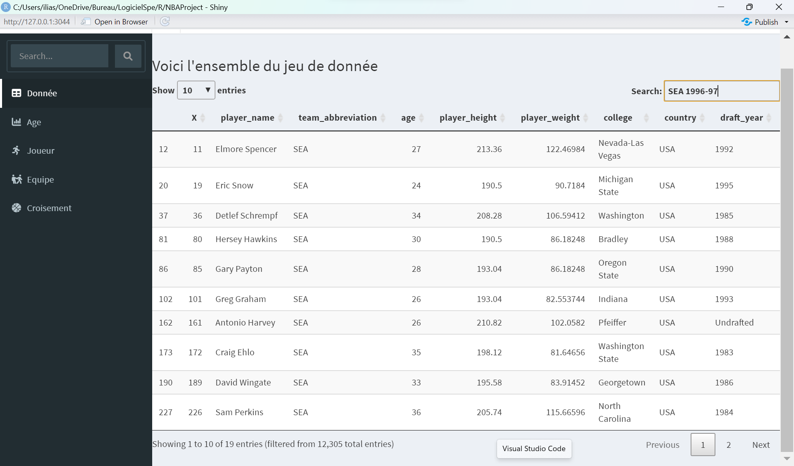
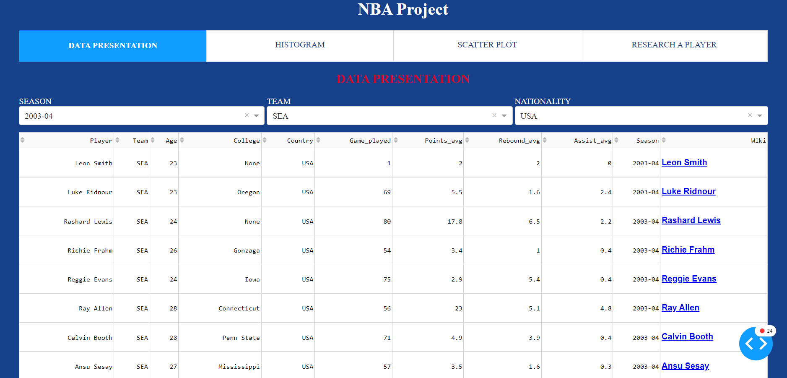
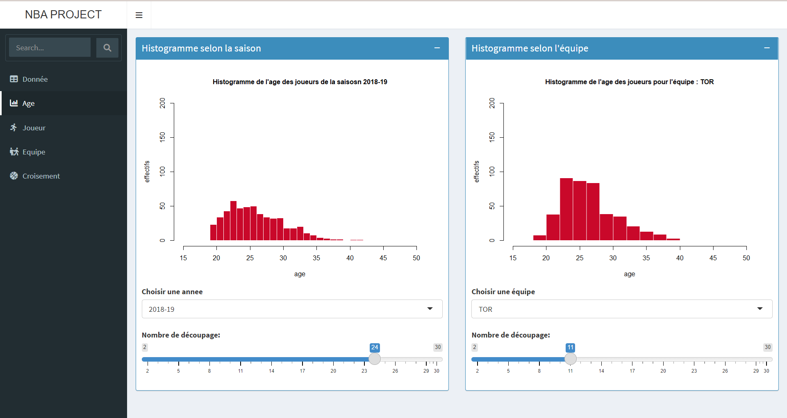
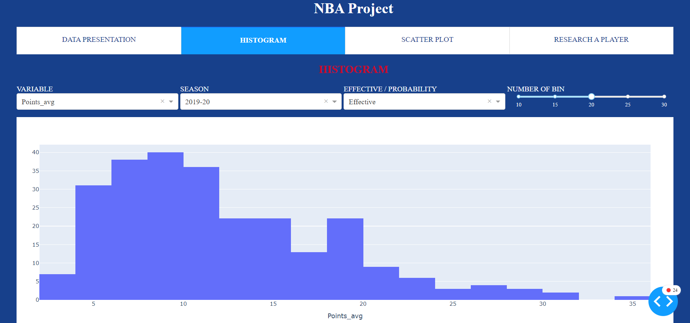
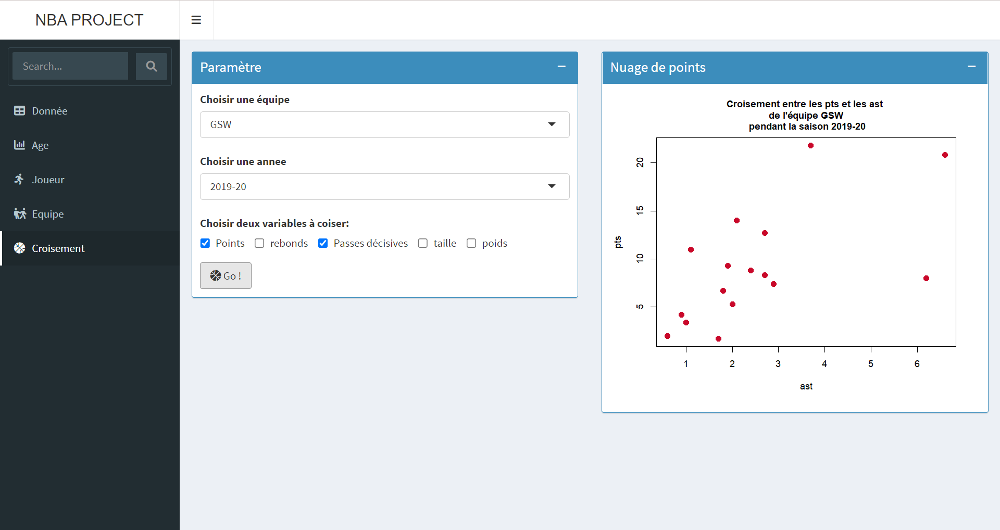
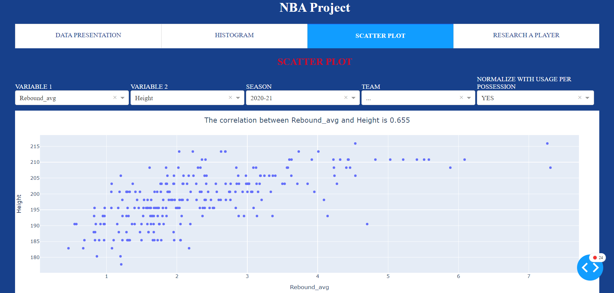
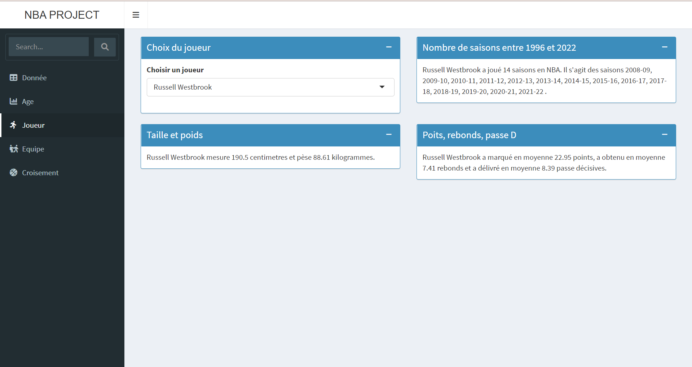
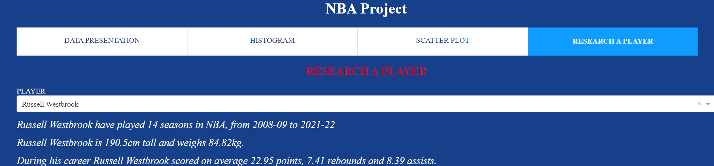

Rapport application NBA
Objectif du projet
Pour le cours de Logiciel spécailisé (M1 SSD), nous avions pour objectif d’utiliser des fonctionnalités de R que nous ne matrisions pas. Comme la création d’une application avec Shiny ou alors la création d’un package. Nous avions aussi la possibilité de découvrir le Julia, qui est un langage de programmation de haut niveau très performant pour le calcul scientifique.
Pour développer le plus de compétences nous avons choisi de réaliser un projet en R et en Julia, afin de comparer les deux langages. Etant amateur de basket, on a choisi un jeu de données sur la NBA pour notre projet. Ensuite, on a décidé de réaliser une analyse statistique de ces données via une application web. En R l’applciation sera développer avec RShiny et en Julia à l’aide de Dash.
L’objectif est de réaliser deux applications avec les mêmes analyses statistiques et les mêmes fonctionnalités afin de comparer les outils Dash et RShiny.
Réalisation
Première page
Les données utilisées
Les données utilisées lors de ce projet ont été trouvé sur kaggle (https://www.kaggle.com/datasets/justinas/nba-players-data). On y retrouve des informations sur tous les joueurs depuis 1996 comme leurs attributs physique et leurs stats.
Page RShiny
Afin de visualiser nos données, on a chosi d’afficher notre dataframe sur la première page de l’application, en y ajoutant des filtres.
Pour l’application Shiny il y avait une fonction (dataTableOutput()) qui permettait d’afficher le dataframe tout en choisi le nombre de ligne à afficher et permettant à l’utilisateur de filtrer les données.

Page Dash.jl
Tandis qu’avec l’application Julia la fonction pour afficher le dataframe (dash_datatable()) n’avait pas les fonctionnalités de filtre. On a donc choisi d’ajouter des listes déroulantes (dropdown) afin de filtrer différentes variables (saison, équipe, nationalité).

Page Rshiny VS Page Dash.jl
Tout d’abord il y a une différence sur la façon de filtrer le dataframe, avec RShiny dans la barre de filtre on peut filtrer plusieurs colonnes à la fois. Alors qu’avec Dash.jl il y a un filtre par variable. Sur l’application faites en Julia une colonne a été rajouté, elle permet d’aller directement sur la page web du joueur afin d’avoir plus d’information. Sur l’application RShiny toutes les varibles du dataframe sont présente tandis que sur l’autre application un que les plus pertinantes ont été gardé.
Difficultés rencontrées
RShiny
L’avantage du filtre par défaut de RShiny s’est avéré être aussi un défaut, car malgrès le fait de pouvoir filtrer plusieurs colonne, on ne pouvais pas choisir lesquelles. Par exemple si on voulait filtrer à l’aide d’une valeur numérique, on ne pouvait pas choisir sur quelle variable le faire, donc l’application n’effectuait pas la bonne action. On aurait pu faire les mêmes listes déroulantes que l’application Dash.jl mais nous n’avons pas essayé.
Julia
La principale difficulté sur cette page est liée au données. En NBA des équipes qui existaient en 1996 n’existe plus maintenant et inversement. Il fallait donc faire des filtres dynamiques dans les listes déroulantes. Par exemple si on sélectionne la saison 1996-97, les équipes OKC et BKL ne doivent pas apparaitre dans la liste déroulante des équipes. Grâce aux callback cette difficultés a été gérées.
Deuxième page
Objectifs
L’objectif est de commencé par une analyse statistique univariée, afin de pouvoir visualiser des données de variable continues.
Page RShiny
Sur l’application RShiny, il y a deux histogrammes sur la variable “age”. Le premier est filtré suivant la saison et le deuxième suivant l’équipe, pour cela l’utilisateur utilise une liste déroulante. De plus il est possible de choisir le nombre de barre de l’histogramme.

Page Dash.jl
Après avoir choisi la variable continue qu’il souhaite visualiser, comme sur l’application RShiny l’utilisateur peut filtrer son dataframe à l’aide des saisons. On a choisi de laisser la possibiliter à l’utilisateur de choisir certains paramètres de l’histogramme. Entre un histogramme des effectifs ou de probabilité, ainsi que le nombre de barre.

Page Rshiny VS Page Dash.jl
Les fonctionnalités pour les pages sont différentes, l’application en RShiny permet d’avoir un histogramme pour les saisons et un pour les équipes tandis que l’application Dash.jl n’a que les saisons.
Difficultés rencontrées
RShiny
Julia
Pas de réelle difficulté sur cette page, comme pour la première il a fallu faire des callaback entre les listes déroulantes.
Troisième page
Objectifs
Après fais une analyse univariée, on a choisi d’en faire une bivariée entre les variables continues à l’aide d’un nuage de point. Cela nous permet de voir s’il y a des liens ou non entre différentes variables.
Page RShiny

Page Dash.jl
Comme les autres page, il y a la possibilité de choisir des filtres sur les variables. On a ajouté le coefficient de corrélation linéaire dans le titre du graphe afin de calculer le lien entre les deux variables sélectionnées. Un paramètre en plus est “normalize with usage per possession”, il permet d’avoir des données plus cohérentes pour les variables de score (points, rebonds, assistes) car les joueurs n’ont pas le même temps de jeu.

Page RShiny VS Page Dash.jl
Difficultés rencontrées
RShiny
Julia
Au début les données avaient une forme très peu linéaire lorsde tous les croisements de variable à cause de la différence de temps de jeu et du nombre de ballon touché par attaque. Tout d’abord on a supprimé les joueurs qui avaient joué peu de match dans la saison (et qui jouaient aussi peu de minute). Ensuite on a créé une formule pour essayer de normaliser les données de score, on prend la variable du pourcentage d’utilisation par possession, et on multiplie une variable de score à deux fois le maximum d’utilisation - l’utilisation du joueur en question.
Quatrième page
Objectifs
Le but était de pouvoir faire une recherche sur un joueur ou une équipe spécifique et avoir des statistiques basique dessus.
Page RShiny


Page Dash.jl
